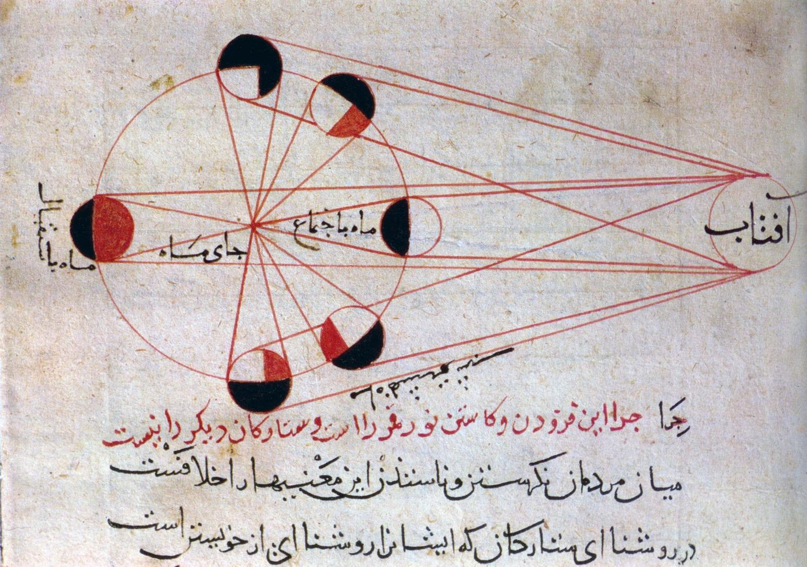

moon sign
月星座
生まれたときに月がどの星座にあったか。何を表すと言われているのか、自分のはどうやって知るのか、時刻が分からないときはどうするのか。

「星座は何座？」と聞かれて答えるのは、ふつう太陽星座です。誕生日だけで決まるので、誰でも知っています。
月星座は何を表すと言われているのか
占星術の側で、太陽・月・アセンダント（上昇宮）の3つは、それぞれ違うものを表すとされています。
アメリカの占星術サイト CHANI（ニューヨーク・タイムズのベストセラー作家チャーニ・ニコラスが率いる）は、公開ページで次のように説明しています。
太陽星座 — 「あなたの人生の目的をあらわす」
月星座 — 「あなたの体と、感情の世界を描く」
アセンダント（上昇宮） — 「生きるうえでの動機と、自分という感覚を照らす」
月星座が受け持つものとして、さらにこう書かれています。
「日々の望み、必要としているもの、欲しくなるもの」「移り変わる気分と感情」、 そして「体と体の必要、世話をする／されることとの関わり、これまでの物語」。
つまり、太陽星座が「外に向かうもの」だとすれば、月星座は「内側で起きていること」の側だと語られています。太陽星座の説明が自分に合わないと感じる人に、月星座を見るよう勧める説明が多いのは、このためです。
ただし、これは占星術の内側での説明です。当たるかどうかを、このサイトは書きません。
自分の月星座を知るには
誕生日だけでは決まりません。時刻がいります。理由は天文の話で、はっきりしています。
一周するのに約27.3日。12の星座を27.3日で回るので、ひとつの星座にいるのは平均で2日と少しです。1日におよそ12〜15度動きます。
そのため、同じ日に生まれても、朝と夜で月星座が違うことがあります。
（太陽は1日に約1度しか動かないので、誕生日だけで決まります）
出生時刻は、母子手帳に書かれていることがあります。ご家族が覚えている場合もあります。
出生地は、月星座を出すだけならほとんど関係ありません。時差を決めるためにしか使いません。場所が本当に効いてくるのは、アセンダントとハウスを出すときです。
このサイトに計算するページを置いてあります。入力はブラウザの中だけで処理され、どこにも送信されません。
時刻が分からないとき
月星座は「2つのうちどちらか」までは絞れます。その日のあいだに星座が変わっていなければ、時刻が分からなくても決まります。変わっている日なら、朝生まれか夜生まれかで見当がつきます。
アセンダントは出せません。約2時間で1つ動くので、「だいたいこのへん」では意味がなくなります。
「正確な出生時刻が分からない人もいます。もしそうでも、心配はいりません。それでも出生図と意味のある形で付き合っていくことはできます」
どこから来たのか
月を見ること自体は、西洋占星術では新しい話ではありません。ホロスコープには、はじめから月の位置が入っています。太陽・月・水星・金星・火星・木星・土星は、望遠鏡がない時代から肉眼で追えた天体で、古代から図に描かれてきました。
新しいのは、「月星座」だけを取り出して単独で語るようになったことのほうです。
つまり「太陽星座＝星座」という理解のほうが、後からできた省略形です。占星術の側から見れば、太陽は10ほどある要素の1つにすぎません。
月星座が「もうひとつの星座」「隠れた本当の星座」といった言い方で語られるのは、この省略があったからです。
知っておくと分かりやすいこと
星座の区切り方には、2つの取り決めがあります。同じ生年月日でも、どちらを使うかで結果が1つずれることがあります。
地球の軸はゆっくり首を振っており（歳差運動）、春分点は約72年で1度ずつ移動します。そのため、季節を基準にした区分と、実際の星の位置が少しずつ離れていきます。
2026年時点で、その差はおよそ24度。約2000年前にはほぼ一致していました。
実際の星の位置を使う流派はサイデリアル方式と呼ばれ、インド占星術はこちらを使います。
これは占星術の側でも知られている事実で、隠されているわけではありません。「西洋占星術とインド占星術で結果が違う」と言われるのは、多くの場合この違いです。
このサイトの計算は、西洋占星術で一般的なトロピカル方式で出しています。
自分の月星座を調べる
出典・参考
- What's the difference between my Sun, Moon, and rising signs?（CHANI）太陽・月・上昇宮それぞれの説明
- Orbit of the Moon（英語版ウィキペディア）月の公転周期と1日あたりの移動
- Sidereal and tropical astrology（英語版ウィキペディア）ふたつの方式の違い
- Axial precession（英語版ウィキペディア）歳差運動。約72年で1度動く